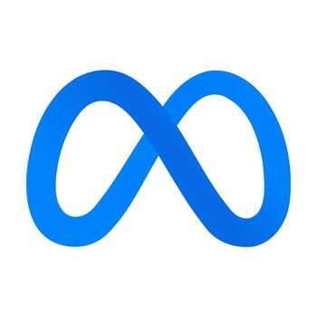
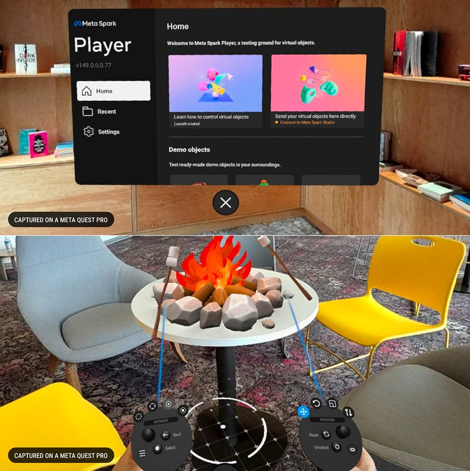

← All case studies


User InteractionOculus Pro Usability
01
Context & Background
- Meta needed to understand how easy their onboarding experience was to complete inside their VR headset — without any guidance from a moderator.

02
Methodology & Goals
Observational Usability Test with Prospects (30)
- Assess the user journey within the VR headset to understand users' perspectives while performing tasks
- Identify patterns of pain points experienced by users
- Observe how long each task took, whether it was completed successfully, and how it was performed
03
Timeline
Phase 1
Project Kick-off
- Stakeholder meetings
- Determining method
- Creating research brief
- Gathering stakeholder input
- Meeting with studio managers to set up intercept testing
Phase 2
Conduct Research
- Getting Figma assets from designers
- Performing usability testing with 30 prospects
Phase 3
Analysis & Deliverable Prep
- Qualitative coding of interviews
- Behaviors, themes & high-impact moments turned into insights and recommendations
Phase 4
Share Out
- Report created and shared broadly with internal and external teams
- Collaboration with product & design to prioritize and refine features based on recommendations
04
Intercept Usability Summary
Insight
Most prospects failed to move their avatar around the VR environment, treating it as passive media and waiting for something to happen.
Recommendation
Provide cues during onboarding on how to move the avatar around.
Insight
Prospects struggled to download the app from the store, taking longer than the time allotted for the task.
Recommendation
Simplify and standardize the app's store listing (icon, name, subtitle) to reduce ambiguity, and make the download button more prominent.
Insight
Requiring prospects to type a long code — shown in the headset — into their phone to begin onboarding felt clunky and hard to navigate.
Recommendation
Consider a companion app that auto-detects the headset via Bluetooth/Wi-Fi pairing, or a push notification that links directly into the onboarding flow.